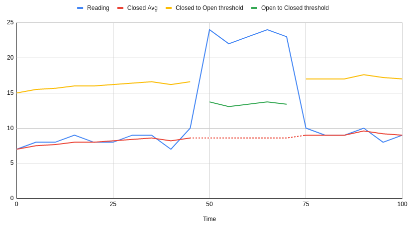
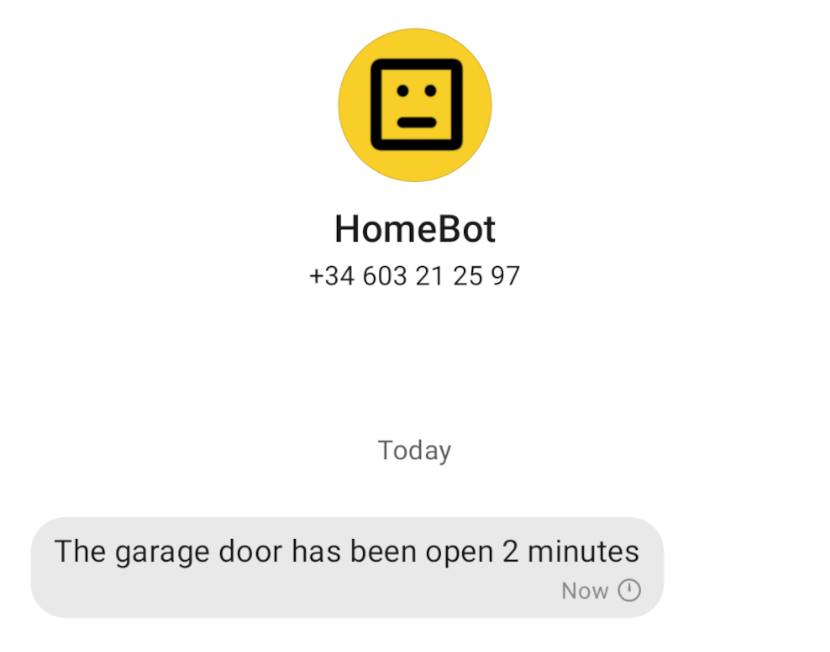
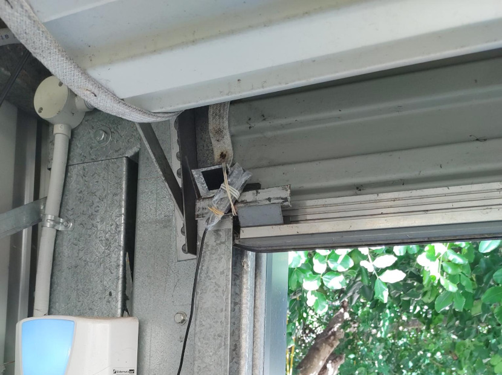
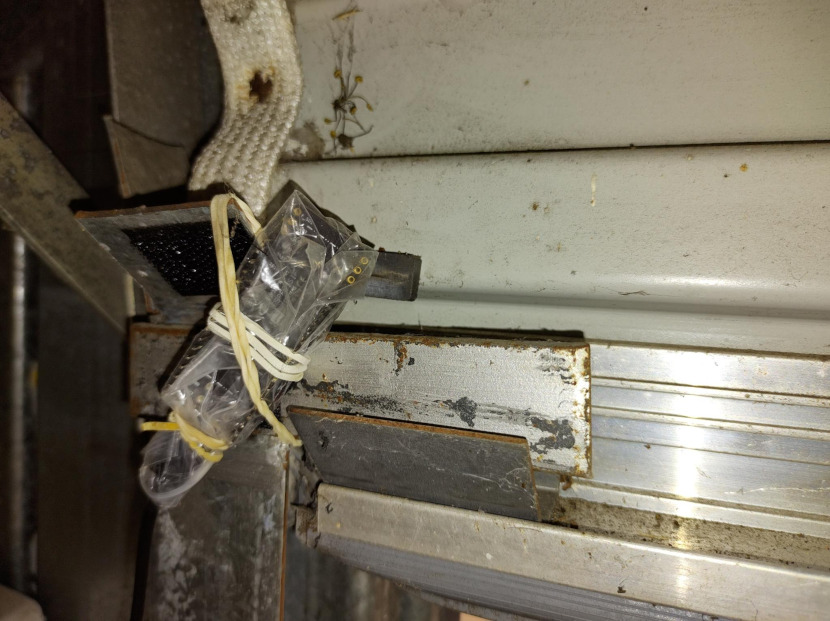

Made in Australia from local and imported ingredients.
I've left the garage door open at least a couple of times. My wife has done it at least once. Surely something can be done to alert us if this happens again! For this project I used an ESP32 to monitor the state of the garage door, and a simple server-side Rust process to generate alerts if the door is left open for too long.
As the ESP32's built-in Hall Effect sensor
can detect a magnetic field, the hardware for this project consisted of simply:
► An ESP32-PICO-KIT (but any ESP32 would do)
► A USB charger and cable
► A magnet
By using the built-in sensor, there is no wiring required, apart from plugging in a USB charger to provide power.
Reading from the Hall Effect sensor is very easy. First the ADC1 module needs to be configured
to reading 12 bit values, as the Hall Effect sensor readings to not cover the full range of the
input. Then we can read from the sensor simply by calling hall_sensor_read().
adc1_config_width(ADC_WIDTH_BIT_12);
...
int value = hall_sensor_read();
At first glance the Hall Effect sensor on the ESP32 acts a lot like a random number generator — the values it returns are super noisy! A simple way to filter out the noise is to perform lots of readings (200) and average them.
This logic is implemented on the ESP32. It could easily be implemented on the server-side instead. I read 200 samples from the Hall Effect sensor every 5 seconds, and then decide whether the door is open or closed.
My initial idea to define fixed thresholds for door open and door closed didn't work reliably. The values returned by the sensor seemed to drift over time, possibly due to temperature. Instead I maintain an average of recent readings from when the door is considered closed, and define a difference threshold relative to this average. 
To keep things simple, I use a fixed message format over UDP. The message is only sent when we determine
that the door is open, and for 30 seconds after the door closes. The message contains three fields:
► An indication of whether the door is open or closed
► Number of seconds since the last state change
► The most recent sensor reading (for debugging).
The IP addresses of the ESP32 and the server are hardcoded, as is the port number for the UDP messages. UDP is a connectionless protocol, so this simplifies the the implementation on both sides.
On the server side I use syslog to log when the door changes state, but otherwise the alerting behaviour is config-driven. I use CallMeBot and their Signal API to send messages when the door has been left open for too long, and then again when the door is closed.
Configuration defines:
► How long the door needs to have been open before sending an alert,
► The phone number of the recipient,
► The recipient's CallMeBot API key,
► The message text for when the door is open, and for when it is closed.

monit is used to monitor the state of the ESP32 (via ping), and that the server process is running and listening on the expected UDP port. I'll receive an email if either side fails, and the server process can be restarted automatically.
Not long after the initial deployment this monitoring identified that if the ESP32 lost its wifi connection, it never came back. As this is a rare occurrence, I fixed it in the simplest possible way by rebooting the ESP32 on disconnection.
The final packaging for the ESP32 is somewhat rough. The plastic zip-lock bag keeps the dust off, while the elastic bands hold it in position.


Source code for this project can be found on Bitbucket.
Made in Australia from local and imported ingredients.